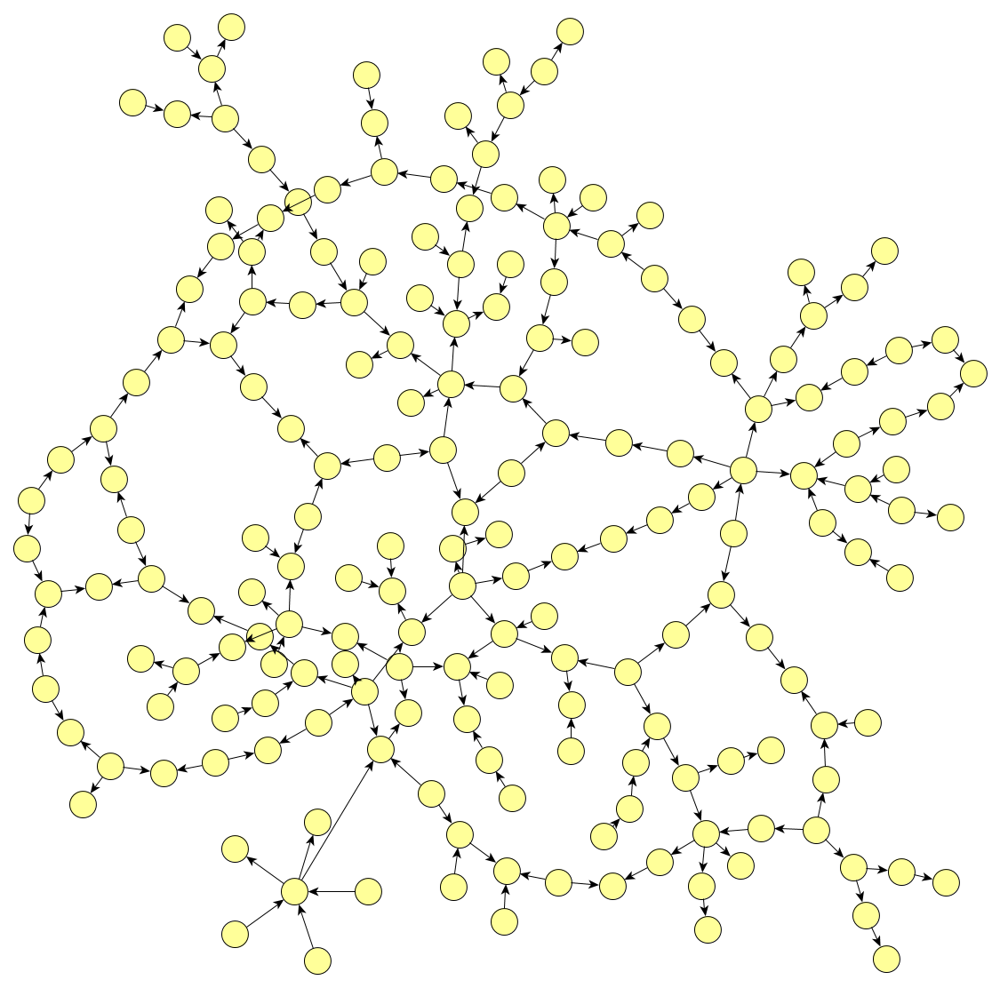

First article on graph-oriented programming#

In 2013, I started a personal project around directed attributed graph databases. The objective was to find a programming model that would enable the software to be as "soft" as the database.
First works#
The concept was defined and setup during 2014 and 2015.
Two articles on graph transformations were a crucial inspiration to the project.
The AGG Aproach published in the volume 2 of the "Handbook of Graph Grammars". AGG was particularly inspiring.
Ermel, Claudia, Michael Rudolf, and Gabriele Taentzer. "The AGG approach: Language and environment." Handbook Of Graph Grammars And Computing By Graph Transformation: Volume 2: Applications, Languages and Tools. 1999. 551-603.
Another article from the same book was also a source of inspiration, "The Progres approach" (which doesn't seem to be available online).
Schürr, Andy, Andreas J. Winter, and Albert Zündorf. "The PROGRES approach: Language and environment." Handbook Of Graph Grammars And Computing By Graph Transformation: Volume 2: Applications, Languages and Tools. 1999. 487-550.
Beginning of 2015, the graph-oriented programming concept was completed, and its capability of solving the useless technical debt was theoretically proven.
The graph transformations are playing a core role in graph-oriented programming.
Closed-source prototype#
In 2016, it was prototyped in a company called GraphApps in a closed source approach. I am no longer part of this company.
Global article on graph-oriented programming#
A very first article was written in 2016 to explain all the concepts of this programming model.
This article is far from being perfect and didactic but it browses a lot of topics that would deserve special attention (especially in the part concerning graph transformations).
The original article can be found here: The graph-oriented programming paradigm.
(July 2018)